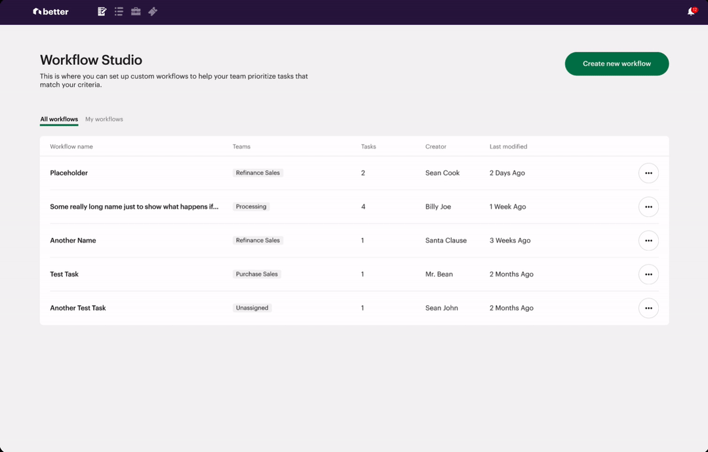
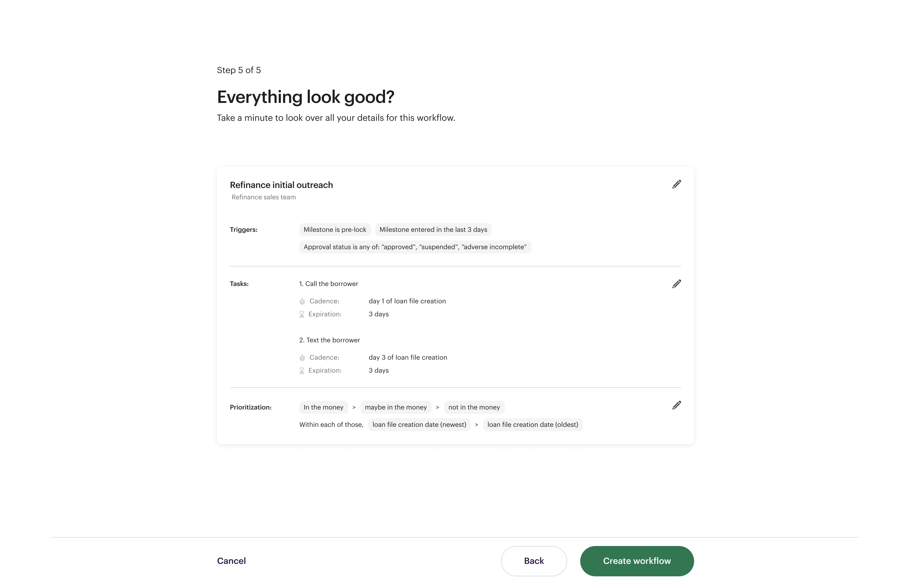

Ticket management
A central hub to identify, delegate, resolve, & record borrower issues.


Research & Opportunity
We went to new hire trainings for customer support staff and followed them around for a couple of weeks to understand the complexities of resolving customer issues.
We started noticing a few problem areas:
While agents were efficient at solving simple issues, complex issues that required help from back of house teams like underwriters and processors would often experience long delays or were ignored altogether.
Issue escalation
Other than sympathising with the user's discontent, support agents often had few options to escalate issues that were blocked by other functions.
Complex issues
Our previous ticketing solution was built to help support agents focus on one issue at a time. The problem was that these conversation would often evolve and branch into multiple items and follow up issues. These would require ad hoc tracking and were sometimes lost.
Communicating challenges
As customer issues were passed from one agent to another, context from previous communications with customers were frequently lost, which often led to redundant convesations and unhappy borrowers.
Defining our approach

Figuring out the pieces
We started exploring designs and testing them with users to make sure our solutions would fit both company needs and user habits.

After reaching general alignment on design directions, we begin thinking about how the product can be broken up to phases and making sure we addressed the different flows and states.
Results




The workflow is then reviewed and published.
Tasklist

Workflow Builder and Tasklist allowed managers to track and continuously optimize their workflow strategies.
Early MVP results showed complex task completion time drop an average of 6.2% (From 57 to 53.5 hours including time in queue).